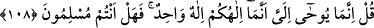

Âdemoğullarının önderi O’dur
Bütün varlığın feyzine vâsıtadır
Cümle varlığın ve yokluğun râbıtası O’dur
Urfî Şîrâzî, Peygamberimiz’in naatına dâir kasîdesinde şöyle der:
Münş-i takdir olan Allah şerefinin ziyâdeliğinden
Adem iklimini terk ettiğin gün
Bu dünyaya nûzûl etmene dâir hükmü yazdığından beri
Yüz kere kalemi tekrar (abes) tıraş etmiştir
Şiirde geçen “abes” kelimesi ile harflerinin yeri değiştirilmiş şekli olan “ba’s
(peygamber gönderme)” murâd edilmiştir. Yâni, Allah’ın yaratılmışları yaratması,
nebîleri ve rasulleri göndermesi ancak senin mülkü ve şehâdet âleminde zuhûrun için
bir mukaddime olmaları içindir. Onların rûhları ve cesedleri, senin şerefli rûhuna ve
latîf cesedine tâbidir.
Sonra bil ki O’nun (s.a.) hayatı da vefâtı da rahmettir. Nitekim O (s.a.) şöyle
buyurmuştur: “Hayatım sizin için hayırdır. Vefâtım da sizin için hayırdır.” Bunun
üzerine ashâb-ı kirâm: “Hayatının bizim için hayırdır (bunu biliyoruz). Peki vefâtında
bizim için hayır olan nedir?” dediler. Rasûlullah (s.a.): “Her pazartesi ve perşembe
akşamları amelleriniz bana arz olunur. Onlardan hayır olanlar için Allah’a hamd
ederim. Kötü amelleriniz için de istiğfar ederim.” buyurdu.[224]
Molla Câmî der ki:
Senin dâr-ı bekâya teşrîf ayrılığınla âlemin canı ağzına geldi
Şefkat ve merhamet ey Allah Resûlü, şefkat ve merhamet
Sen âlemlere rahmet olarak gönderilmedin mi?
O hâlde niçin mahrum olanlardan uzak durursun
Ey suya kanmış lâle, topraktan/kabr-i saâdetinden kalk
Nergis gibi ne kadar uykuda kalacaksın, kalk
Günah deryasına batmış olsam da
Dudaklarım kupkuru, yolunun toprağına düşmüşüm
Sen rahmet bulutusun, zaman zaman
Dudakları kurumuş âşıklarına nazar edivermen hoştur
108. De ki: “Bana sâdece, sizin ilâhınızın ancak bir tek Allah olduğu vahyedildi.
Hâlâ müslüman olmayacak mısınız?”